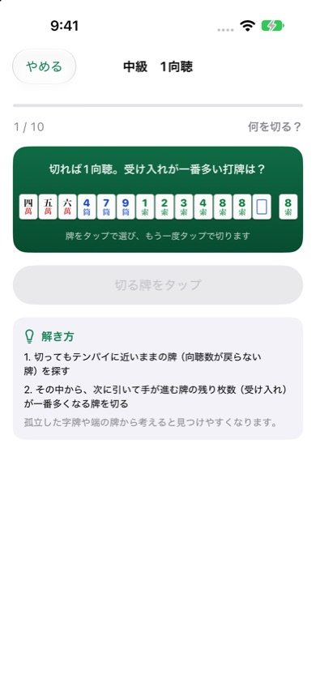
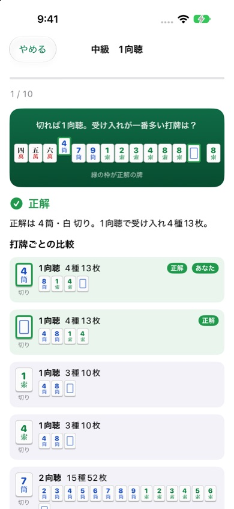

麻雀何切る問題
麻雀の「何切る」を、自動で作られる問題で何問でも練習できるiPhoneアプリです。答えると、打牌ごとの向聴数と受け入れ枚数が並ぶので、なぜその牌を切るのかがわかります。
iPhone（iOS 17以降）・無料（広告あり）


できること
- 4段階の問題：初級（テンパイ取り）、中級（1向聴）、上級（2向聴）、清一色。1セット10問で、問題は毎回自動で作られます。
- 今日の5問：日替わりの5問。続けて解いた日数が記録されます。
- 打牌ごとの解説：切った後の向聴数、受け入れの牌と残り枚数を比べて表示します。
- 間違えた問題の復習：間違えた問題がたまり、正解すると外れます。
- 記録：モードごとの正解率と、今日の5問の連続日数。
よくある質問
正解はどうやって決めていますか
切った後の向聴数が最も小さくなる打牌のうち、受け入れ枚数（引くと向聴数が進む牌の残り枚数）が最も多いものを正解にしています。同じ枚数の打牌が複数あれば、どれを選んでも正解です。
役やドラ、安全度は考えますか
考えません。純粋な牌効率の練習用です。七対子・国士無双の形は向聴数に含めます。
広告を消せますか
「設定」→「広告を削除する」から、買い切り（300円）で広告を非表示にできます。機種変更後は「購入を復元」を押してください。
お問い合わせ
メール: tanacount.support@gmail.com
返信までお時間をいただく場合があります。
ほかのアプリ
麻雀待ち判定：手牌から待ち牌・役・符・点数がわかる。打牌候補と役一覧つき
麻雀点数計算ドリル：翻と符から点数を4択で答える練習問題アプリ
麻雀成績表：セット麻雀の精算・通算成績・局ごとのグラフ、iCloudで同卓者と共有
麻雀点数計算：符と翻から点数を自動計算する、卓に置いて使う麻雀の点数表示アプリ
棚卸カウンター：JANバーコードを読み取って、小さなお店の在庫を数えるiPhoneアプリ